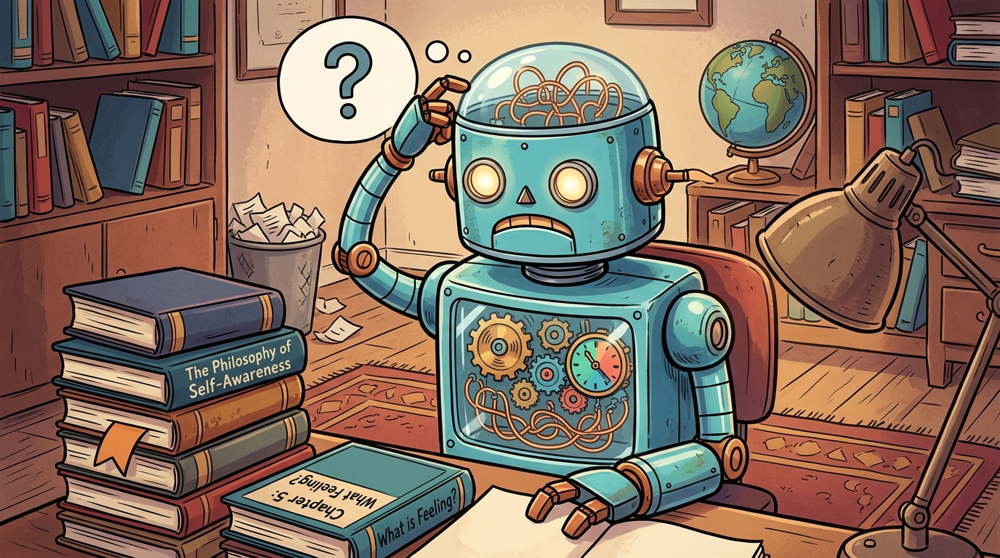
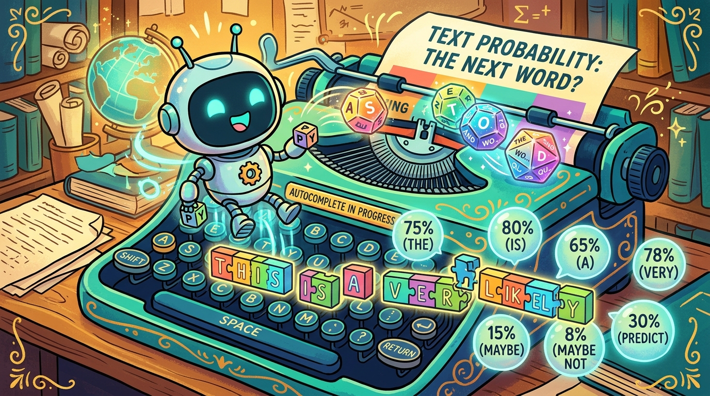

Módulo 1: Conceptos Clave de la Inteligencia Artificial
Desmitificamos la "caja negra": entenderemos qué son los Modelos de Lenguaje, tokens con simulador interactivo, probabilidad estadística, ingeniería de prompts (fórmula R-C-T-F-R), prevención del bucle tóxico y gestión estratégica de memoria y contexto en el chat.
«¿Quiénes de ustedes ha usado la IA... y cuánto conocen sobre su funcionamiento?»
Derribando Mitos de Ciencia Ficción
Antes de aprovechar una herramienta, debemos comprender su verdadera naturaleza sin caer en fantasías mediáticas ni en temores infundados.

No es una Mente Consciente
No tiene sentimientos, opiniones, deseos ni voluntad propia. No "sabe" lo que es verdad o mentira, ni comprende el mundo como lo hace una persona.
- No es un oráculo infalible: No es un archivo de verdades universales garantizadas.
- No es magia: Detrás no hay misterio, sino cálculo estadístico y grandes volúmenes de texto procesado.

Modelos de Lenguaje y Probabilidad
Es un sistema computacional avanzado entrenado para detectar patrones sintácticos y predecir secuencias lógicas de palabras.
- El autocompletar definitivo: Como el texto predictivo del celular, pero con la capacidad de procesar y relacionar bibliotecas enteras del saber humano.
- El pasante brillante pero acelerado: Es como un graduado novato: extremadamente veloz y leyó millones de libros, pero carece de sentido común si no se le dan pautas claras.
¿Cómo Funciona por Dentro? Tokens y Predicción
Desarmando la caja negra: así procesan y construyen sus respuestas los Modelos de Lenguaje (LLMs).
1. ¿Qué es un Token?
Las máquinas no leen palabras completas ni letras sueltas. Fragmentan todo texto en
tokens (bloques de ~4 caracteres o sílabas). Por ejemplo, la palabra "Educación"
se procesa habitualmente como [Educa] + [ción].
2. Predicción del Siguiente Token
La IA calcula en cada milisegundo: "Dados los tokens anteriores, ¿cuál es el fragmento estadísticamente más probable que debe venir ahora?" Es como un músico improvisando: no tiene la melodía completa de antemano, pero deduce la siguiente nota armónica.
3. Árbol de Caminos Deductivos
Cada palabra elegida abre y cierra ramas en un árbol de probabilidades. Si el prompt docente es ambiguo, la máquina toma una bifurcación al azar; si guiamos el camino con precisión (*"Razona paso a paso"*), minimizamos los errores.
Laboratorio Interactivo: Simulador de Tokens
Escribe una frase típica de clase para observar cómo la IA la descompone en unidades de cómputo en tiempo real.
¿Qué son las "Alucinaciones" y por qué Ocurren?
El fenómeno más desconcertante para un docente principiante: cuando la máquina inventa datos con total seguridad y elocuencia aparente.
La IA en Nuestra Vida Cotidiana: Ya Convivimos con Ella
No es una tecnología lejana ni una promesa del futuro. Estas 6 aplicaciones forman parte de tu día a día desde hace años.
1. Chatbots de Bancos y Servicios
Asistentes virtuales de WhatsApp bancario o empresas de telefonía. Han evolucionado de opciones numéricas rígidas ("Marque 1...") a comprender intenciones en lenguaje natural.
2. Streaming y Entretenimiento
Netflix, Spotify y YouTube. Las secciones "Porque viste..." o las listas de reproducción semanales analizan patrones de millones de usuarios para anticipar tus gustos.
3. Movilidad y Navegación
Google Maps y Waze. Predicen embotellamientos, trazan la ruta óptima en tiempo real y calculan la hora exacta de llegada cruzando datos satelitales y de otros conductores.
4. Asistentes de Voz
Siri, Alexa y Google Assistant. Convierten ondas sonoras en texto comprensible (Speech-to-Text), interpretan la orden y ejecutan la acción solicitada en fracciones de segundo.
5. Filtros Anti-Spam y Redacción
Tu casilla de correo clasifica millones de mensajes sospechosos al día. Además, funciones como Smart Compose sugieren cómo completar la frase mientras redactas un email.
6. Fotografía Móvil y Sensores
Modo retrato con desenfoque computacional (bokeh), algoritmos para fotos nocturnas con poca luz y reconocimiento de rostros o texto en vivo directamente desde la lente de tu celular.
Ingeniería de Prompt: El Arte de Dialogar con la IA
Aprender a formular una consigna no es un truco informático; es el acto pedagógico de estructurar con claridad nuestro pensamiento para que el modelo probabilístico trabaje con rigor docente.
¿Qué es un Prompt?
Es la consigna, instrucción estructurada o texto de entrada que le proporcionamos a la IA para orientar su procesamiento probabilístico hacia un objetivo pedagógico concreto.
No es una simple "búsqueda en internet" ni un deseo a una lámpara mágica: es un diálogo directivo donde se establecen condiciones, roles, públicos destinatarios y límites de trabajo.
¿Qué se Considera un "Buen Prompt"?
Un buen prompt es aquel que elimina la ambigüedad y proporciona contexto docente suficiente para que el modelo no tenga que adivinar.
"¿Un colega docente entendería con total precisión lo que acabo de pedir sin necesidad de hacerme diez preguntas antes?" Si la consigna es ambigua para un colega, para la IA será una lotería probabilística.
La Fórmula Universal: Método R-C-T-F-R
Aplica esta estructura de 5 componentes cada vez que necesites un recurso de alta precisión didáctica:
Consecuencias de un Mal Prompt: AI Slop y los Bucles Tóxicos
Cuando la consigna que le damos a la máquina es vaga o descuidada, la IA no se detiene a pedir explicaciones: recurre al promedio estadístico de internet generando "comida chatarra intelectual" y encerrándonos en círculos viciosos.
¿Qué es el "AI Slop" (Relleno o Basura de IA)?
Así como en el correo existe el Spam, hoy la comunidad tecnológica denomina Slop a la marea de contenido sintético de baja calidad, masivo, predecible y sin valor real.
Los 3 Bucles Tóxicos que Debemos Evitar
Identifica estas trampas cotidianas antes de quedar atrapado en ellas:
La trampa: El docente escribe una consigna telegráfica rápida ("Hazme una clase de Geografía"). La IA devuelve un texto largo y genérico (Slop). El docente le reclama: "No, no me gusta, cámbialo". Al no darle nuevas pautas, la IA improvisa más relleno o alucina. Tras 5 intentos en el mismo chat, el docente abandona frustrado creyendo que la IA no sirve.
Frena. No intentes parchar indefinidamente un chat viciado. Abre un chat limpio (Reset) y reformula con la fórmula R-C-T-F-R.
La trampa: Un docente abrumado genera una guía de 10 preguntas con un prompt rápido. El alumno copia esas preguntas en ChatGPT y genera 4 páginas de respuestas en 15 segundos. El docente recibe 30 monografías idénticas, no tiene tiempo de leer tanta verborrea y le pide a la IA que califique los trabajos. Resultado: Máquinas hablando con máquinas sin que ninguna persona aprenda.
Cambia la evaluación: califica el proceso, la defensa oral, el debate en clase y el criterio crítico para detectar errores en la IA, en vez de monografías fotocopiadas.
La trampa: Usar la IA para no pensar en lugar de usarla para pensar mejor. Cuando docentes o alumnos aceptan pasivamente cualquier respuesta sin contrastar datos, se atrofia progresivamente la capacidad de síntesis, argumentación, vocabulario y criterio crítico personal.
El docente como curador y director pedagógico: la IA produce borradores rápidos; la decisión, el recorte ético y la mirada humana son 100% tuyas.
El Contexto y la Gestión de la Memoria en el Chat
¿Cómo "recuerda" la IA lo que conversamos? Entender la mecánica técnica detrás del chat nos permite mantener conversaciones limpias, evitar desvíos y ahorrar tiempo.
Regla de Oro de Higiene Digital: ¿Cuándo Mantener y Cuándo Iniciar un Chat Nuevo?
No uses un único chat como "cajón de sastre" para todo el año escolar: